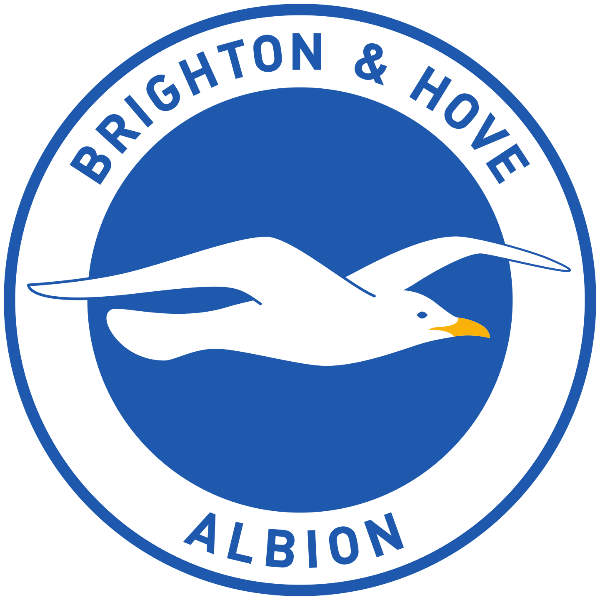
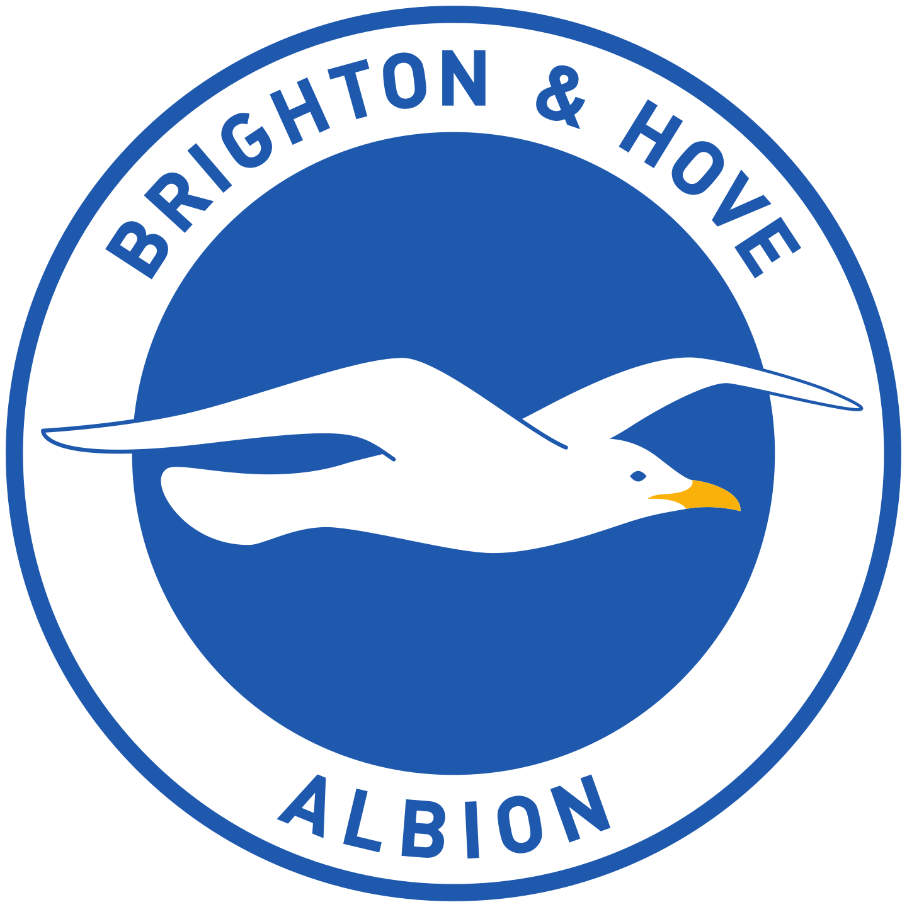

Ben Bloom looks back at a thrilling weekend, featuring big wins at both ends of the Premier League
Enzo Maresca says his team 'are not ready' to challenge Liverpool, Arsenal and Man City. But are they?

Chelsea star surpasses Man City legend Yaya Toure and is among the best spot-kick takers in Premier League history
Alex Keble compares Cole Palmer with Lionel Messi and says Chelsea are truly in the title race
Get all the stats, key manager quotes, and team news ahead of tonight's match
Spurs head coach reacts to 4-3 loss to Chelsea that made it only one win from last seven matches in all competitions
See which players have been given extra points in Fantasy Premier League
Chelsea fought back from two goals down to win London derby and move four points behind Reds
Arsenal manager 'gutted' to drop points at Fulham but says team 'cannot cry' about missed opportunity in title race
Chelsea star delivers Gameweek-high haul of 18 points to reward those who had his points doubled
Substitutes Enes Unal and Dango Ouattara give Cherries third successive victory and deny Ipswich first home win

Jamie Vardy and Bobby De Cordova-Reid score late goals in 2-2 draw to as Ruud van Nistelrooy stays unbeaten as manager
Saliba scores again and Saka has late goal ruled out as Gunners draw 1-1
Club statement says striker will be monitored in hospital after accident in Essex
Club confirm departure after five months at Old Trafford
We list players who are serving a suspension or are close to a ban from Premier League matches because of yellow cards
As Enzo Maresca continues to rule his side out, Ben Bloom assesses whether Blues could yet challenge for top spot

Alex Keble looks at what Mikel Arteta's specialist coach has done to turn the Gunners into the Premier League's best team from dead-balls
Adrian Clarke analyses Sunday's London derby and the potentially decisive players
Arsenal boss wants his team to be "kings of everything" - not just set-pieces - as he looks to close gap on Liverpool
Man City boss expresses pride in his team after twice fighting back to draw 2-2 at Crystal Palace
Head coach acknowledges the big job in hand after Nottingham Forest hand him rare home defeat
New Zealander becomes club's top Premier League scorer as visitors stun Man Utd at stormy Old Trafford
Champions' difficult run of form continues as they draw 2-2, with Lewis scoring and getting sent off
Bees edge out the Magpies in a six-goal thriller to continue their fine home form
Goodison Park fixture called off due to risk to safety in local area and severe wind warning from Storm Darragh
See who will be officiating in the latest round of 2024/25 fixtures, including the Video Assistant Refereesre
The late poet and author on how the Windrush generation have had a historical impact on football

The Scout explains what happens to your Fantasy team in the event of matches not taking place
Bees players such as Damsgaard visit a local primary school to talk about diversity and inclusion during the Rainbow Laces period
Wolves Foundation and Premier League disability football sessions have given one participant the opportunity to show what he is capable of
Ahead of Sunday's London derby, relive an ICONIC meeting the last time they faced each other at Tottenham Hotspur Stadium
Manchester City and Chelsea will join 30 other teams competing for global glory in the United States next summer
Spurs head coach bemoans his side's performance in 1-0 defeat at AFC Bournemouth

Nineteen-year-old defender scores first Premier League goal as Cherries earn 1-0 win to go ninth
See which five players are backed for a big Fantasy score this weekend

Nigerian nets in either half as Cottagers earn 3-1 home victory to climb into European spot

See which players have been given extra points in Fantasy Premier League
Some of the world's top Fantasy managers reveal their plans for the armband

Coaches' Voice identifies the key tactical points from Newcastle United's 3-3 draw with Liverpool

Watch six of November's BEST saves and help decide which goalkeeper wins the award

Vote for your Guinness Goal of the Month. Watch EIGHT of the best strikes in November 2023 and help decide who wins the award!
How Nicolas Jover made Arsenal the kings of corners. Alex Keeble looks at what Mikel Arteta's specialist coach has done to turn the Gunners into the Premier League's best team from dead balls.

Hurzeler, O'Neil or Slot? Help decide which manager wins the Premier League prize

Help decide which of these EIGHT Premier League stars wins November 2024's award
Eight Academy prospects have been nominated for their performances over recent weeks

How Severndale Specialist Academy and Shrewsbury Town Foundation are making a big impact on young people with disabilities

Leyton Orient Trust and Premier League Kicks has provided one participant with the opportunity to help his local community

Wolves defender has night to forget in 4-0 loss at Everton as he emulates four other unfortunate players

Alex Keble analyses a victory over Man Utd secured with two more set-piece goals

Schar's late equaliser denies Reds fifth consecutive win as leaders drop two points in title race

Egyptian's double in Liverpool's 3-3 draw with Newcastle puts him top of goalscoring chart
Belgian marks return to starting XI with goal and assist as champions end winless run

The Blues keep their impressive run going with a dominant performance at Southampton

Goals from Rogers, Watkins and Cash secure a much-needed win for Villa
Pep Guardiola's side could end Matchweek 14 as low as eighth in the table if poor form continues against Nottingham Forest
Adrian Clarke looks at where Wednesday's meeting of Arsenal and Man Utd will be won or lost